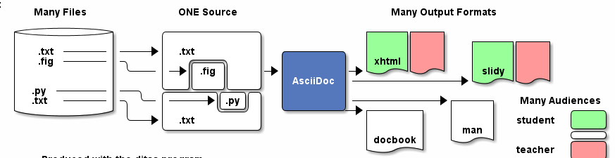
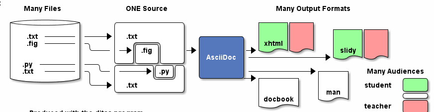

Purpose
-
To keep all my configuration files under version control
Setup
#TODO: This section is under construction
Clone the repo
git clone https://github.com/rhc/dotfiles.gitLink the dotfiles
rake linkInstall the dependencies
rake pacmanBootstrap
rake bootstrap:vimMy list of applications
 



Selection criteria
This is the list of programs I use to get things done quickly. Like my good friend Mandla, I tend to select programs that:
-
Do one thing, and only one thing
-
Do that one thing well and fast
-
Don’t drag my system down
-
Do it in style
I prefer CLI over GUI. I like to enable Vim keybindings accross all programs.
You can find below my programs loosely grouped in the following categories: Internet, Multimedia, Utilities, Documents, Security and Science.
Internet
-
Network manager: netcl
-
Web browser: firefox, chrome
-
Add-ons web browser: pentadactyl, todoist
-
Youtube downloader: youtube-dl
-
Bit torrent client: transmission
-
Email client: gmail
-
Instant messaging: pidgin ?,
-
IRC client: irssi
-
Tunneling reverse proxy: ngrok
-
Text editor: Vim
-
Display manager: XMonad
-
Task manager: Todoist, Task
-
Screen saver: xscreensaver
-
Softphone: skype, hangout
-
News aggregator: newsbeuter ?
-
Blog: jekyll ?
-
Twitter client: ?
-
Pastebin client: gist
-
Bitcoin:
Multimedia
-
Image viewer: feh
-
Raster editor: gimp, imagemagick
-
Vector graphics: dia, inkscape,
-
3D modeling/rendering: blender
-
Screen capture: scrot
-
Audio player: mpd, cmus
-
Video player: vlc
-
Volume manager: ?
-
CD ripping: ?
-
Sound editing:
-
Mobile phone manager: gnokii
-
Video editor:
-
Screencast: ?
-
Collection manager: xbmc
-
Graph visualization: graphviz
Development
-
programming language: ruby
-
Web framework: rails
-
Ruby version management: rbenv
-
Version control system: git
-
CSS front-end framework: bootstrap
-
Source file indexer: ctags
-
Headless Webkit: phantomjs
Utilities
-
Partition tools:
-
Shell: bash, zsh (oneday?)
-
Terminal emulator: urxvt, Termite (oneday?), tilda
-
Comparison: vimdiff
-
Disk usage: filelight ?, ncdu ?
-
Clock synchronization: ntpd
-
System monitoring: conky?, htop,
-
System information viewer: alsi?,
-
Clipboard manager: xclip
-
Wallpaper setter: feh
-
Package management: pacman, packer
-
Terminal multiplexer: tmux
-
Window manager: xmonad
-
application launcher: dmenu
-
finance: gnucash
-
Time management: taskwarrior, wyrd (oneday)
-
Login manager: slim, gdm
Documents
-
Office suite: libreoffice, google docs
-
Document markup language: asciidoc, pandoc
-
Spreadsheets: libreoffice calc
-
Scientific documents: latex
-
Text editor: vim
-
E-book reader: calibre
-
Pdf/Djvu/postscript/comicbook viewer: zathura
-
Comic book viewer: zathura, mcomix?, qcomicBook ?
-
Terminal pagers: less, vimpager
-
Chm: chmsee
-
OCR software: ?
-
Note taking organizers: org-mode ?
-
Flash card: Anki
Security
-
Security scanner: nmap
-
Network intrusion prevention and detection system: snort
-
Network protocol analyzer: wireshark
-
Vulnerability scanner: nessus
-
Intrusion detection system: tripwire
-
Backup program: #TODO
-
Screen locker: xscreensaver
-
Hash checker: md5sum
-
Encryption: gnupg, pgp ?
-
Router simulator: gns
System
-
Operating system: Arch Linux
-
Virtual server: virtualbox
-
System and service manager: systemd
-
Job scheduler: systemd/cron
-
Self-monitoring, analysis and reporting: smartmontools
Science
-
Calculator: bc
-
Numerical computation: octave?
-
Statistic: R
-
Data evaluation: gnuplot
To do
-
Extend the dotfiles for other applications.
-
Create a Rake script for the creation of the symlinks.